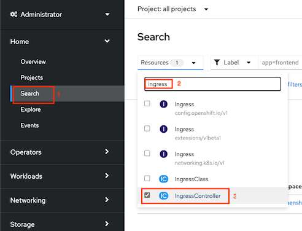
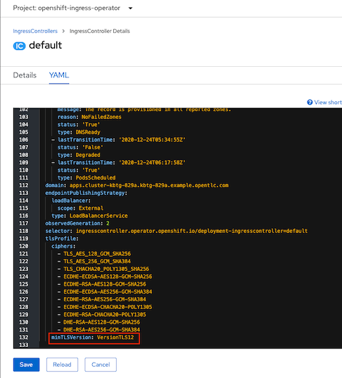

Deployment Strategy with OpenShift Route
Application Deployment
Deploy 2 version of frontend app. Each deployment and service use label app and version for select each version. Initial Route will routing all traffic to v1.
- Deploy frontend v1 and v2 and create route (frontend.yaml)
oc apply -f manifests/frontend.yaml -n project1
Blue/Green Deployment
- Test Route
FRONTEND_URL=https://$(oc get route frontend -n project1 -o jsonpath='{.spec.host}') while [ 1 ]; do curl -k $FRONTEND_URL/version echo sleep 1 done - Use another terminal to patch route to frontend v2
oc patch route frontend -p '{"spec":{"to":{"name":"frontend-v2"}}}' -n project1 - Check output from cURL that response is from frontend-v2
- Set route back to v1
oc patch route frontend -p '{"spec":{"to":{"name":"frontend-v1"}}}' -n project1 - Check output from cURL that response is from frontend-v1
Canary Deployment
- Apply route for Canary deployment to v1 and v2 with 80% and 20% ratio (route-with-alternate-backend.yaml)
oc apply -f manifests/route-with-alternate-backend.yaml -n project1 - Call frontend for 10 times. You will get 8 responses from v1 and 2 responses from v2
FRONTEND_URL=https://$(oc get route frontend -n project1 -o jsonpath='{.spec.host}') COUNT=0 while [ $COUNT -lt 10 ]; do curl -k $FRONTEND_URL/version echo sleep .2 COUNT=$(expr $COUNT + 1) done - Update weight to 60% and 40%
oc patch route frontend -p '{"spec":{"to":{"weight":60}}}' -n project1 oc patch route frontend --type='json' -p='[{"op":"replace","path":"/spec/alternateBackends/0/weight","value":40}]' -n project1 - Re-run previous bash script to loop frontend. This times you will get 6 responses from v1 and 4 responses from v2
Restrict TLS to v1.2
- Check default ingresscontroller by run command or use OpenShift Web Admin Console
oc edit ingresscontroller default -n openshift-ingress-operator
Use Web Admin Console to search for ingressscontroller and select default

- Minimum TLS version can be specified by attribute minTLSVersion

- Also test with custom profile, edit
tlsProfile:and click Save
spec:
replicas: 2
tlsSecurityProfile:
type: Custom
custom:
ciphers:
- ECDHE-ECDSA-AES128-GCM-SHA256
- ECDHE-RSA-AES128-GCM-SHA256
minTLSVersion: VersionTLS12
Test TLS/SSL
To test TLS/SSL encryption enabled on OpenShift ingresscontroller, use https://testssl.sh/ testssl.ssh tool to run report for Ingress VIP support of TLS/SSL ciphers and protocols
Run the test
docker run --rm -ti drwetter/testssl.sh https://frontend-project1.apps.ocp01.example.com
Sample results
From OpenShift ingress (default tls profile)
Start 2020-12-30 03:37:42 -->> 198.18.1.202:443 (frontend-project1.apps.ocp01.example.com) <<-- 1="" 64="" 128="" 253="" 256="" 728="" 2048="" 5077="" 7200="" rdns="" (198.18.1.202):="" .apps.ocp01.example.com.="" service="" detected:="" http="" testing="" protocols="" via="" sockets="" except="" npn+alpn="" sslv2="" not="" offered="" (ok)="" sslv3="" tls="" 1.1="" 1.2="" 1.3="" (ok):="" final="" npn="" spdy="" alpn="" http2="" cipher="" categories="" null="" ciphers="" (no="" encryption)="" anonymous="" authentication)="" export="" (w="" o="" adh+null)="" low:="" bit="" +="" des,="" rc[2,4],="" md5="" export)="" triple="" des="" idea="" obsoleted="" cbc="" (aes,="" aria="" etc.)="" strong="" encryption="" (aead="" ciphers)="" with="" no="" fs="" forward="" secrecy="" server's="" preferences="" has="" server="" order?="" yes="" --="" and="" below="" negotiated="" protocol="" tlsv1.3="" tls_aes_256_gcm_sha384,="" ecdh="" (x25519)="" per="" hexcode="" suite="" name="" (openssl)="" keyexch.="" bits="" (iana="" rfc)="" -----------------------------------------------------------------------------------------------------------------------------="" -="" tlsv1="" tlsv1.1="" tlsv1.2="" (server="" order)="" xc02f="" ecdhe-rsa-aes128-gcm-sha256="" aesgcm="" tls_ecdhe_rsa_with_aes_128_gcm_sha256="" xc030="" ecdhe-rsa-aes256-gcm-sha384="" tls_ecdhe_rsa_with_aes_256_gcm_sha384="" xcca8="" ecdhe-rsa-chacha20-poly1305="" chacha20="" tls_ecdhe_rsa_with_chacha20_poly1305_sha256="" x9e="" dhe-rsa-aes128-gcm-sha256="" dh="" tls_dhe_rsa_with_aes_128_gcm_sha256="" x9f="" dhe-rsa-aes256-gcm-sha384="" tls_dhe_rsa_with_aes_256_gcm_sha384="" x1302="" tls_aes_256_gcm_sha384="" x1303="" tls_chacha20_poly1305_sha256="" x1301="" tls_aes_128_gcm_sha256="" x1304="" tls_aes_128_ccm_sha256="" aesccm="" robust="" (fs)="" omitting="" authentication="" encryption,="" 3des,="" rc4="" is="" elliptic="" curves="" offered:="" prime256v1="" secp384r1="" secp521r1="" x25519="" x448="" group="" haproxy="" (2048="" bits)="" defaults="" hello)="" extensions="" (standard)="" "renegotiation="" info="" #65281"="" "server="" #0"="" "ec="" point="" formats="" #11"="" "session="" ticket="" #35"="" "supported="" versions="" #43"="" "key="" share="" #51"="" "supported_groups="" #10"="" "max="" fragment="" length="" #1"="" "extended="" master="" secret="" #23"="" session="" rfc="" hint="" seconds,="" tickets="" keys="" seems="" to="" be="" rotated="" <="" daily="" ssl="" id="" support="" resumption="" tickets:="" yes,="" id:="" clock="" skew="" random="" values,="" fingerprinting="" possible="" signature="" algorithm="" sha256="" rsa="" key="" size="" (exponent="" 65537)="" usage="" digital="" signature,="" encipherment="" extended="" web="" serial="" fingerprints="" 590c2a8bf166d6de="" sha1="" d3a0e8768da3e8cf037edb51a28189090356486b="" 162934c54d4b3a01007d20809fc1bf7c0e37c476fb508c170f0ae6017c16a1c6="" common="" (cn)="" *.apps.ocp01.example.com="" subjectaltname="" (san)="" trust="" (hostname)="" ok="" san="" wildcard="" cn="" (same="" w="" sni)="" chain="" of="" (self="" signed="" ca="" in="" chain)="" ev="" cert="" (experimental)="" certificate="" validity="" (utc)="">= 60 days (2020-12-28 05:07 --> 2022-12-28 05:07)
> 398 days issued after 2020/09/01 is too long
ETS/"eTLS", visibility info not present
Certificate Revocation List --
OCSP URI --
NOT ok -- neither CRL nor OCSP URI provided
OCSP stapling not offered
OCSP must staple extension --
DNS CAA RR (experimental) not offered
Certificate Transparency --
Certificates provided 2
Issuer ingress-operator@1609132063
Intermediate cert validity #1: ok > 40 days (2022-12-28 05:07). ingress-operator@1609132063 <-- 0="" 1="" 6="" 7="" 8="" 9="" 10="" 11="" 15="" 17="" 66="" 71="" 74="" 79="" 200="" 253="" 256="" 2048="" ingress-operator@1609132063="" intermediate="" bad="" ocsp="" (exp.)="" ok="" testing="" http="" header="" response="" @="" "="" status="" code="" clock="" skew="" sec="" from="" localtime="" strict="" transport="" security="" not="" offered="" public="" key="" pinning="" --="" server="" banner="" (no="" "server"="" line="" in="" header,="" interesting!)="" application="" x-powered-by:="" express="" cookie(s)="" issued:="" secure,="" httponly="" headers="" cache-control:="" private="" reverse="" proxy="" vulnerabilities="" heartbleed="" (cve-2014-0160)="" vulnerable="" (ok),="" no="" heartbeat="" extension="" ccs="" (cve-2014-0224)="" (ok)="" ticketbleed="" (cve-2016-9244),="" experiment.="" robot="" does="" support="" any="" cipher="" suites="" that="" use="" rsa="" secure="" renegotiation="" (rfc="" 5746)="" supported="" client-initiated="" crime,="" tls="" (cve-2012-4929)="" breach="" (cve-2013-3587)="" gzip="" deflate="" compress="" br="" compression="" -="" only="" supplied="" tested="" poodle,="" ssl="" (cve-2014-3566)="" sslv3="" tls_fallback_scsv="" 7507)="" fallback="" possible="" protocol="" below="" 1.2="" sweet32="" (cve-2016-2183,="" cve-2016-6329)="" freak="" (cve-2015-0204)="" drown="" (cve-2016-0800,="" cve-2016-0703)="" on="" this="" host="" and="" port="" make="" sure="" you="" don't="" certificate="" elsewhere="" with="" sslv2="" enabled="" services="" https:="" censys.io="" ipv4?q="162934C54D4B3A01007D20809FC1BF7C0E37C476FB508C170F0AE6017C16A1C6" could="" help="" to="" find="" out="" logjam="" (cve-2015-4000),="" experimental="" common="" prime="" bits="" detected:="" haproxy="" (2048="" bits),="" but="" dh="" export="" ciphers="" beast="" (cve-2011-3389)="" ssl3="" or="" tls1="" lucky13="" (cve-2013-0169),="" winshock="" (cve-2014-6321),="" rc4="" (cve-2013-2566,="" cve-2015-2808)="" detected="" running="" client="" simulations="" (http)="" via="" sockets="" browser="" suite="" name="" (openssl)="" forward="" secrecy="" ------------------------------------------------------------------------------------------------="" android="" 4.4.2="" tlsv1.2="" ecdhe-rsa-aes128-gcm-sha256="" bit="" ecdh="" (p-256)="" 5.0.0="" 6.0="" 7.0="" (native)="" 8.1="" (x25519)="" 9.0="" tlsv1.3="" tls_aes_256_gcm_sha384="" 10.0="" chrome="" (win="" 10)="" firefox="" ie="" xp="" connection="" win="" dhe-rsa-aes128-gcm-sha256="" phone="" edge="" opera="" safari="" ios="" os="" x="" 10.11="" 10.12="" 12.1="" (ios="" 12.2)="" tls_chacha20_poly1305_sha256="" 13.0="" (macos="" 10.14.6)="" apple="" ats="" java="" 6u45="" 7u25="" 8u161="" 11.0.2="" (openjdk)="" 12.0.1="" openssl="" 1.0.2e="" 1.1.0l="" (debian)="" 1.1.1d="" thunderbird="" (68.3)="" rating="" (experimental)="" specs="" (not="" complete)="" labs's="" 'ssl="" guide'="" (version="" 2009q="" 2020-01-30)="" specification="" documentation="" github.com="" ssllabs="" research="" wiki="" ssl-server-rating-guide="" (weighted)="" (0)="" exchange="" strength="" final="" score="" overall="" grade="" t="" cap="" reasons="" capped="" t.="" issues="" the="" chain="" of="" trust="" (self="" signed="" ca="" chain)="" a.="" hsts="" is="" done="" 2020-12-30="" 03:39:20="" [="" 100s]="">> 198.18.1.202:443 (frontend-project1.apps.ocp01.example.com) <From OpenShift ingress (default tls profile)
Start 2020-12-30 03:46:29 -->> 198.18.1.202:443 (frontend-project1.apps.ocp01.example.com) <<-- 1="" 64="" 128="" 253="" 256="" 728="" 2048="" 5077="" 7200="" rdns="" (198.18.1.202):="" --="" service="" detected:="" http="" testing="" protocols="" via="" sockets="" except="" npn+alpn="" sslv2="" not="" offered="" (ok)="" sslv3="" tls="" 1.1="" 1.2="" 1.3="" (ok):="" final="" npn="" spdy="" alpn="" http2="" cipher="" categories="" null="" ciphers="" (no="" encryption)="" anonymous="" authentication)="" export="" (w="" o="" adh+null)="" low:="" bit="" +="" des,="" rc[2,4],="" md5="" export)="" triple="" des="" idea="" obsoleted="" cbc="" (aes,="" aria="" etc.)="" strong="" encryption="" (aead="" ciphers)="" with="" no="" fs="" forward="" secrecy="" server's="" preferences="" has="" server="" order?="" yes="" and="" below="" negotiated="" protocol="" tlsv1.3="" tls_aes_256_gcm_sha384,="" ecdh="" (x25519)="" per="" hexcode="" suite="" name="" (openssl)="" keyexch.="" bits="" (iana="" rfc)="" ----------------------------------------------------------------------------------------------------------------="" -------------="" -="" tlsv1="" tlsv1.1="" tlsv1.2="" (server="" order)="" xc02f="" ecdhe-rsa-aes128-gcm-sha256="" aesgcm="" tls_ecdhe_rsa_with_aes_128_gcm_sha256="" x1302="" tls_aes_256_gcm_sha384="" x1303="" tls_chacha20_poly1305_sha256="" chacha20="" x1301="" tls_aes_128_gcm_sha256="" x1304="" tls_aes_128_ccm_sha256="" aesccm="" robust="" (fs)="" omitting="" authentication="" encryption,="" 3des,="" rc4="" is="" elliptic="" curves="" offered:="" prime256v1="" secp384r1="" secp521r1="" x25519="" x448="" defaults="" hello)="" extensions="" (standard)="" "renegotiation="" info="" #65281"="" "server="" #0"="" "ec="" point="" formats="" #11"="" "session="" ticket="" #35"="" "supported="" versions="" #43"="" "key="" share="" #51"="" "supported_groups="" #10"="" "max="" fragment="" length="" #1"="" "extended="" master="" secret="" #23"="" session="" rfc="" hint="" seconds,="" tickets="" keys="" seems="" to="" be="" rotated="" <="" daily="" ssl="" id="" support="" resumption="" tickets:="" yes,="" id:="" clock="" skew="" random="" values,="" fingerprinting="" possible="" signature="" algorithm="" sha256="" rsa="" key="" size="" (exponent="" 65537)="" usage="" digital="" signature,="" encipherment="" extended="" web="" serial="" fingerprints="" 590c2a8bf166d6de="" sha1="" d3a0e8768da3e8cf037edb51a28189090356486b="" 162934c54d4b3a01007d20809fc1bf7c0e37c476fb508c170f0ae6017c16a1c6="" common="" (cn)="" *.apps.ocp01.example.com="" subjectaltname="" (san)="" trust="" (hostname)="" ok="" san="" wildcard="" cn="" (same="" w="" sni)="" chain="" of="" (self="" signed="" ca="" in="" chain)="" ev="" cert="" (experimental)="" certificate="" validity="" (utc)="">= 60 days (2020-12-28 05:07 --> 2022-12-28 05:07)
> 398 days issued after 2020/09/01 is too long
ETS/"eTLS", visibility info not present
Certificate Revocation List --
OCSP URI --
NOT ok -- neither CRL nor OCSP URI provided
OCSP stapling not offered
OCSP must staple extension --
DNS CAA RR (experimental) not offered
Certificate Transparency --
Certificates provided 2
Issuer ingress-operator@1609132063
Intermediate cert validity #1: ok > 40 days (2022-12-28 05:07). ingress-operator@1609132063 <-- 0="" 1="" 6="" 7="" 8="" 9="" 10="" 11="" 15="" 17="" 66="" 71="" 74="" 79="" 200="" 253="" 256="" ingress-operator@1609132063="" intermediate="" bad="" ocsp="" (exp.)="" ok="" testing="" http="" header="" response="" @="" "="" status="" code="" clock="" skew="" sec="" from="" localtime="" strict="" transport="" security="" not="" offered="" public="" key="" pinning="" --="" server="" banner="" (no="" "server"="" line="" in="" header,="" interesting!)="" application="" x-powered-by:="" express="" cookie(s)="" issued:="" secure,="" httponly="" headers="" cache-control:="" private="" reverse="" proxy="" vulnerabilities="" heartbleed="" (cve-2014-0160)="" vulnerable="" (ok),="" no="" heartbeat="" extension="" ccs="" (cve-2014-0224)="" (ok)="" ticketbleed="" (cve-2016-9244),="" experiment.="" robot="" does="" support="" any="" cipher="" suites="" that="" use="" rsa="" secure="" renegotiation="" (rfc="" 5746)="" supported="" client-initiated="" crime,="" tls="" (cve-2012-4929)="" breach="" (cve-2013-3587)="" gzip="" deflate="" compress="" br="" compression="" -="" only="" supplied="" tested="" poodle,="" ssl="" (cve-2014-3566)="" sslv3="" tls_fallback_scsv="" 7507)="" fallback="" possible="" protocol="" below="" 1.2="" sweet32="" (cve-2016-2183,="" cve-2016-6329)="" freak="" (cve-2015-0204)="" drown="" (cve-2016-0800,="" cve-2016-0703)="" on="" this="" host="" and="" port="" make="" sure="" you="" don't="" certificate="" elsewhere="" with="" sslv2="" enabled="" services="" https:="" censys.io="" ipv4?q="162934C54D4B3A01007D20809FC1BF7C0E37C476FB508C170F0AE6017C16A1C6" could="" help="" to="" find="" out="" logjam="" (cve-2015-4000),="" experimental="" (ok):="" dh="" export="" ciphers,="" detected="" <="TLS" beast="" (cve-2011-3389)="" ssl3="" or="" tls1="" lucky13="" (cve-2013-0169),="" winshock="" (cve-2014-6321),="" rc4="" (cve-2013-2566,="" cve-2015-2808)="" ciphers="" running="" client="" simulations="" (http)="" via="" sockets="" browser="" suite="" name="" (openssl)="" forward="" secrecy="" ------------------------------------------------------------------------------------------------="" android="" 4.4.2="" tlsv1.2="" ecdhe-rsa-aes128-gcm-sha256="" bit="" ecdh="" (p-256)="" 5.0.0="" 6.0="" 7.0="" (native)="" 8.1="" (x25519)="" 9.0="" tlsv1.3="" tls_aes_256_gcm_sha384="" 10.0="" chrome="" (win="" 10)="" firefox="" ie="" xp="" connection="" win="" phone="" edge="" opera="" safari="" ios="" os="" x="" 10.11="" 10.12="" 12.1="" (ios="" 12.2)="" tls_chacha20_poly1305_sha256="" 13.0="" (macos="" 10.14.6)="" apple="" ats="" java="" 6u45="" 7u25="" 8u161="" 11.0.2="" (openjdk)="" 12.0.1="" openssl="" 1.0.2e="" 1.1.0l="" (debian)="" 1.1.1d="" thunderbird="" (68.3)="" rating="" (experimental)="" specs="" (not="" complete)="" labs's="" 'ssl="" guide'="" (version="" 2009q="" 2020-01-30)="" specification="" documentation="" github.com="" ssllabs="" research="" wiki="" ssl-server-rating-guide="" (weighted)="" (0)="" exchange="" strength="" final="" score="" overall="" grade="" t="" cap="" reasons="" capped="" t.="" issues="" the="" chain="" of="" trust="" (self="" signed="" ca="" chain)="" a.="" hsts="" is="" done="" 2020-12-30="" 03:48:04="" [="" 97s]="">> 198.18.1.202:443 (frontend-project1.apps.ocp01.example.com) <--------------------------------------------------------------------------
Start 2020-12-30 03:24:29 -->> 74.125.24.147:443 (www.google.com) <<-- 1="" 60="" 64="" 128="" 168="" 253="" 256="" 2048="" 5077="" 100800="" further="" ip="" addresses:="" 74.125.200.99="" 74.125.200.105="" 74.125.200.147="" 74.125.200.106="" 74.125.200.104="" 74.125.200.103="" 2404:6800:4003:c03::93="" 2404:6800:4003:c03::68="" 2404:6800:4003:c03::6a="" 2404:6800:4003:c03::63="" rdns="" (74.125.24.147):="" --="" service="" detected:="" http="" testing="" protocols="" via="" sockets="" except="" npn+alpn="" sslv2="" not="" offered="" (ok)="" sslv3="" tls="" (deprecated)="" 1.1="" 1.2="" 1.3="" (ok):="" final="" npn="" spdy="" grpc-exp,="" h2,="" (advertised)="" alpn="" http2="" 1.1,="" grpc-exp="" (offered)="" cipher="" categories="" null="" ciphers="" (no="" encryption)="" anonymous="" authentication)="" export="" (w="" o="" adh+null)="" low:="" bit="" +="" des,="" rc[2,4],="" md5="" export)="" triple="" des="" idea="" obsoleted="" cbc="" (aes,="" aria="" etc.)="" strong="" encryption="" (aead="" ciphers)="" with="" no="" fs="" forward="" secrecy="" server's="" preferences="" has="" server="" order?="" yes="" only="" for="" <="" negotiated="" protocol="" tlsv1.3="" tls_aes_256_gcm_sha384,="" ecdh="" (x25519)="" per="" hexcode="" suite="" name="" (openssl)="" keyexch.="" bits="" (iana="" rfc)="" -----------------------------------------------------------------------------------------------------------------------------="" -="" tlsv1="" (server="" order)="" xc009="" ecdhe-ecdsa-aes128-sha="" aes="" tls_ecdhe_ecdsa_with_aes_128_cbc_sha="" xc00a="" ecdhe-ecdsa-aes256-sha="" tls_ecdhe_ecdsa_with_aes_256_cbc_sha="" xc013="" ecdhe-rsa-aes128-sha="" tls_ecdhe_rsa_with_aes_128_cbc_sha="" xc014="" ecdhe-rsa-aes256-sha="" tls_ecdhe_rsa_with_aes_256_cbc_sha="" x2f="" aes128-sha="" rsa="" tls_rsa_with_aes_128_cbc_sha="" x35="" aes256-sha="" tls_rsa_with_aes_256_cbc_sha="" x0a="" des-cbc3-sha="" 3des="" tls_rsa_with_3des_ede_cbc_sha="" tlsv1.1="" tlsv1.2="" xcca9="" ecdhe-ecdsa-chacha20-poly1305="" chacha20="" tls_ecdhe_ecdsa_with_chacha20_poly1305_sha256="" xc02b="" ecdhe-ecdsa-aes128-gcm-sha256="" aesgcm="" tls_ecdhe_ecdsa_with_aes_128_gcm_sha256="" xc02c="" ecdhe-ecdsa-aes256-gcm-sha384="" tls_ecdhe_ecdsa_with_aes_256_gcm_sha384="" xcca8="" ecdhe-rsa-chacha20-poly1305="" tls_ecdhe_rsa_with_chacha20_poly1305_sha256="" xc02f="" ecdhe-rsa-aes128-gcm-sha256="" tls_ecdhe_rsa_with_aes_128_gcm_sha256="" xc030="" ecdhe-rsa-aes256-gcm-sha384="" tls_ecdhe_rsa_with_aes_256_gcm_sha384="" x9c="" aes128-gcm-sha256="" tls_rsa_with_aes_128_gcm_sha256="" x9d="" aes256-gcm-sha384="" tls_rsa_with_aes_256_gcm_sha384="" order,="" thus="" listed="" by="" strength)="" x1302="" tls_aes_256_gcm_sha384="" x1303="" tls_chacha20_poly1305_sha256="" x1301="" tls_aes_128_gcm_sha256="" robust="" (fs)="" omitting="" authentication="" encryption,="" 3des,="" rc4="" is="" elliptic="" curves="" offered:="" prime256v1="" x25519="" defaults="" hello)="" extensions="" (standard)="" "renegotiation="" info="" #65281"="" "ec="" point="" formats="" #11"="" "session="" ticket="" #35"="" "next="" #13172"="" "key="" share="" #51"="" "supported="" versions="" #43"="" "extended="" master="" secret="" #23"="" "application="" layer="" negotiation="" #16"="" session="" rfc="" hint="" seconds="" but:="" requires="" keys="" to="" be="" rotated="" daily="" !="" ssl="" id="" support="" resumption="" tickets:="" yes,="" id:="" clock="" skew="" -1="" sec="" from="" localtime="" certificate="" #1="" signature="" algorithm="" sha256="" key="" size="" (exponent="" 65537)="" usage="" digital="" signature,="" encipherment="" extended="" web="" serial="" fingerprints="" 3f51fc95cd80458c0300000000bada85="" sha1="" b9887df599dba2f4a9b08fbc8ad9613bd4999f73="" cd2ff770ed2d115422187dbafdde2953eae45d26a9b509c74cb98cd99cbb225b="" common="" (cn)="" www.google.com="" subjectaltname="" (san)="" trust="" (hostname)="" ok="" san="" and="" cn="" (same="" w="" sni)="" chain="" of="" ev="" cert="" (experimental)="" validity="" (utc)="" expires="" days="" (34)="" (2020-11-10="" 14:28=""> 2021-02-02 14:28)
ETS/"eTLS", visibility info not present
Certificate Revocation List http://crl.pki.goog/GTS1O1core.crl
OCSP URI http://ocsp.pki.goog/gts1o1core
OCSP stapling not offered
OCSP must staple extension --
DNS CAA RR (experimental) available - please check for match with "Issuer" below: issue=pki.goog
Certificate Transparency yes (certificate extension)
Certificates provided 2
Issuer GTS CA 1O1 (Google Trust Services from US)
Intermediate cert validity #1: ok > 40 days (2021-12-15 00:00). GTS CA 1O1 <-- 60="" 256="" globalsign="" intermediate="" bad="" ocsp="" (exp.)="" ok="" server="" certificate="" #2="" signature="" algorithm="" sha256="" with="" rsa="" key="" size="" ec="" bits="" (curve="" p-256)="" usage="" digital="" extended="" tls="" web="" authentication="" serial="" fingerprints="" 1119c84bdc70f8970300000000badc31="" sha1="" 24d6848a7ae33848fb695b99949cfd1ae287df5a="" 659ed7a97662c29cb6f6754aba10d80c3005618681297f5066156d0c8f431ef3="" common="" name="" (cn)="" www.google.com="" subjectaltname="" (san)="" trust="" (hostname)="" via="" san="" and="" cn="" (same="" w="" o="" sni)="" chain="" of="" ev="" cert="" (experimental)="" no="" validity="" (utc)="" expires="" <="" days="" (34)="" (2020-11-10="" 14:41="" --=""> 2021-02-02 14:41)
ETS/"eTLS", visibility info not present
Certificate Revocation List http://crl.pki.goog/GTS1O1core.crl
OCSP URI http://ocsp.pki.goog/gts1o1core
OCSP stapling not offered
OCSP must staple extension --
DNS CAA RR (experimental) available - please check for match with "Issuer" below: issue=pki.goog
Certificate Transparency yes (certificate extension)
Certificates provided 2
Issuer GTS CA 1O1 (Google Trust Services from US)
Intermediate cert validity #1: ok > 40 days (2021-12-15 00:00). GTS CA 1O1 <-- 0="" 1="" 2="" 6="" 7="" 8="" 9="" 10="" 11="" 15="" 17="" 64="" 66="" 71="" 74="" 79="" 90="" 91="" 95="" 200="" 253="" 256="" globalsign="" intermediate="" bad="" ocsp="" (exp.)="" ok="" testing="" http="" header="" response="" @="" "="" status="" code="" clock="" skew="" sec="" from="" localtime="" strict="" transport="" security="" not="" offered="" public="" key="" pinning="" --="" server="" banner="" gws="" application="" cookie(s)="" issued:="" secure,="" httponly="" headers="" x-frame-options:="" sameorigin="" x-xss-protection:="" cache-control:="" private,="" max-age="0" reverse="" proxy="" vulnerabilities="" heartbleed="" (cve-2014-0160)="" vulnerable="" (ok),="" no="" heartbeat="" extension="" ccs="" (cve-2014-0224)="" (ok)="" ticketbleed="" (cve-2016-9244),="" experiment.="" robot="" secure="" renegotiation="" (rfc="" 5746)="" supported="" client-initiated="" crime,="" tls="" (cve-2012-4929)="" breach="" (cve-2013-3587)="" potentially="" ok,="" "gzip"="" compression="" detected.="" -="" only="" supplied="" tested="" can="" be="" ignored="" for="" static="" pages="" or="" if="" secrets="" in="" the="" page="" poodle,="" ssl="" (cve-2014-3566)="" sslv3="" support="" tls_fallback_scsv="" 7507)="" downgrade="" attack="" prevention="" sweet32="" (cve-2016-2183,="" cve-2016-6329)="" vulnerable,="" uses="" bit="" block="" ciphers="" freak="" (cve-2015-0204)="" drown="" (cve-2016-0800,="" cve-2016-0703)="" on="" this="" host="" and="" port="" make="" sure="" you="" don't="" use="" certificate="" elsewhere="" with="" sslv2="" enabled="" services="" https:="" censys.io="" ipv4?q="CD2FF770ED2D115422187DBAFDDE2953EAE45D26A9B509C74CB98CD99CBB225B" could="" help="" to="" find="" out="" logjam="" (cve-2015-4000),="" experimental="" (ok):="" dh="" export="" ciphers,="" detected="" <="TLS" 1.2="" beast="" (cve-2011-3389)="" tls1:="" ecdhe-ecdsa-aes128-sha="" ecdhe-ecdsa-aes256-sha="" ecdhe-rsa-aes128-sha="" ecdhe-rsa-aes256-sha="" aes128-sha="" aes256-sha="" des-cbc3-sha="" but="" also="" supports="" higher="" protocols="" tlsv1.1="" tlsv1.2="" (likely="" mitigated)="" lucky13="" (cve-2013-0169),="" cipher="" chaining="" (cbc)="" tls.="" check="" patches="" winshock="" (cve-2014-6321),="" rc4="" (cve-2013-2566,="" cve-2015-2808)="" running="" client="" simulations="" (http)="" via="" sockets="" browser="" protocol="" suite="" name="" (openssl)="" forward="" secrecy="" ------------------------------------------------------------------------------------------------="" android="" 4.4.2="" ecdhe-ecdsa-aes128-gcm-sha256="" ecdh="" (p-256)="" 5.0.0="" 6.0="" 7.0="" (native)="" 8.1="" (x25519)="" 9.0="" tlsv1.3="" tls_aes_128_gcm_sha256="" 10.0="" chrome="" (win="" 10)="" firefox="" ie="" xp="" connection="" win="" tlsv1.0="" fs="" phone="" edge="" opera="" safari="" ios="" os="" x="" 10.11="" 10.12="" 12.1="" (ios="" 12.2)="" tls_chacha20_poly1305_sha256="" 13.0="" (macos="" 10.14.6)="" apple="" ats="" java="" 6u45="" 7u25="" 8u161="" 11.0.2="" (openjdk)="" 12.0.1="" openssl="" 1.0.2e="" 1.1.0l="" (debian)="" ecdhe-ecdsa-chacha20-poly1305="" 1.1.1d="" tls_aes_256_gcm_sha384="" thunderbird="" (68.3)="" rating="" (experimental)="" specs="" (not="" complete)="" labs's="" 'ssl="" guide'="" (version="" 2009q="" 2020-01-30)="" specification="" documentation="" github.com="" ssllabs="" research="" wiki="" ssl-server-rating-guide="" (weighted)="" (28)="" exchange="" (27)="" strength="" (36)="" final="" score="" overall="" grade="" b="" cap="" reasons="" capped="" b.="" 1.1="" 1.0="" a.="" hsts="" is="" done="" 2020-12-30="" 03:27:44="" [="" 357s]="">> 74.125.24.147:443 (www.google.com) <